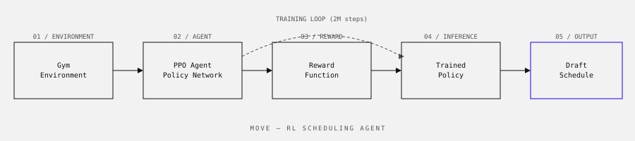

Move Agency · 2023
An RL agent trained in simulation to optimise crew and equipment scheduling for large-scale event logistics — handling dynamic constraints that make the problem too complex for rule-based approaches.

Move Agency coordinates logistics for large events — festivals, product launches, stadium events. Scheduling the right crew members to the right tasks at the right times involves dozens of constraints simultaneously: skill requirements per task, crew availability windows, equipment dependencies, travel time between locations, and hard deadlines tied to show schedules.
The existing process was manual, handled by experienced logistics coordinators. It worked, but it scaled poorly and produced schedules that, while valid, often left slack time and missed efficiency optimisations that a human planner under time pressure wouldn't catch.
Crew scheduling with this many simultaneous constraints is NP-hard. Classical optimisation approaches (integer programming, constraint satisfaction) can find optimal solutions but become intractably slow as the problem size grows. The goal was a system that could produce good — not necessarily optimal — schedules fast enough to be useful during live planning sessions.
A simulation environment modelling the scheduling problem as a Markov Decision Process, with a Proximal Policy Optimisation (PPO) agent trained against it:
Note: the agent was evaluated in simulation. Deployment in live production scheduling was outside the scope of this project.
In simulation benchmarks against historical schedules, the RL agent produced solutions with 12–18% better crew utilisation and significantly fewer constraint violations than the baseline greedy heuristic. On large problem instances (50+ crew, 200+ task slots), it outperformed simulated annealing in solution quality within equivalent time budgets.
Reward shaping is the hardest part of RL in practice. The first reward function I designed produced an agent that learned to avoid constraint violations by... not assigning anyone to anything. Zero violations, zero utility. Getting the reward signal right required understanding what "good" looks like from the domain expert's perspective and encoding that into a function that the agent could actually learn from.
I also learned the limits of simulation-to-real transfer. The agent performs well on problem instances that look like its training distribution. When coordinators described edge cases from real events — a crew member going home sick mid-event, a stage delayed by two hours — the agent struggled. Handling distributional shift properly would require either a more diverse training set or a different architecture.